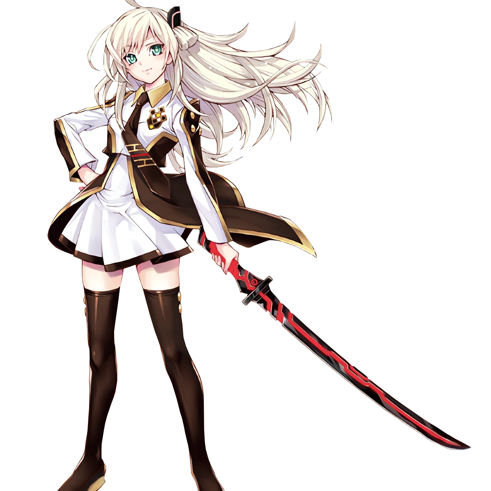

<!doctype html><html lang="en"><head><meta charset="utf-8"><meta name="viewport" content="width=device-width,initial-scale=1,viewport-fit=cover"><meta name="theme-color" content="#09152c"><title>Sky Striker: Hearts Above the Clouds — Expanded</title><style>
*{box-sizing:border-box}body{margin:0;color:#edf5ff;background:#060d1c;font:15px/1.5 system-ui,-apple-system,sans-serif}button{font:inherit;cursor:pointer;touch-action:manipulation}#app{max-width:720px;min-height:100dvh;margin:auto;background:linear-gradient(160deg,#0c1d3b,#11112d 72%,#2b193c);position:relative;overflow:hidden}header{display:flex;gap:8px;align-items:center;justify-content:space-between;padding:12px 13px;background:#07142ee8;position:relative;z-index:2;flex-wrap:wrap}header strong{font-size:14px;letter-spacing:.5px}header .score{color:#ff9dc6;font-size:13px}button{border:1px solid #6683b1;background:#1b3658;color:#fff;border-radius:11px;padding:10px 12px;min-height:43px}button:active{filter:brightness(1.3)}button:focus-visible{outline:3px solid #ffb2dc}button.primary{background:linear-gradient(110deg,#c95194,#874fa9);border-color:#ffc0dd;font-weight:700}.mini{font-size:12px;min-height:35px;padding:6px 9px}.stage{height:44dvh;min-height:275px;max-height:490px;position:relative;overflow:hidden;background:radial-gradient(ellipse at 50% 40%,#467cb87c,transparent 58%),linear-gradient(150deg,#173e64,#11182e 70%)}.stage[data-place="Garden"]{background:radial-gradient(circle at 80% 20%,#fa98ba77,transparent 50%),linear-gradient(135deg,#63365e,#172b48)}.stage[data-place="Rooftop"]{background:linear-gradient(170deg,#f6a6a877,#5b4983 50%,#10213f)}.stage[data-place="Café"]{background:radial-gradient(circle at 30% 40%,#d99a6977,transparent 60%),linear-gradient(120deg,#49314b,#15243d)}.stage[data-place="Hangar"]{background:repeating-linear-gradient(90deg,#183d5e 0 58px,#1f4769 60px 63px)}.stage[data-place="Observatory"]{background:radial-gradient(circle at 65% 25%,#8f91e477,transparent 45%),linear-gradient(#090d35,#263c6b)}.stage:after{content:'✦   ·   ✧   ·   ✦';position:absolute;left:6%;top:15%;font-size:28px;color:#ffffff35;letter-spacing:15px}.portrait{position:absolute;height:110%;max-width:94%;object-fit:contain;bottom:-22%;left:50%;transform:translateX(-50%);filter:drop-shadow(0 4px 25px #0008);animation:enter .4s ease both}.portrait.spirit{height:98%;bottom:-8%}@keyframes enter{from{opacity:.2;transform:translateX(-45%) scale(.97)}to{opacity:1;transform:translateX(-50%) scale(1)}}.place{position:absolute;z-index:1;top:13px;left:13px;background:#071c39c9;border:1px solid #7997b9;padding:6px 11px;border-radius:20px;font-size:12px}.dialogue{position:relative;z-index:1;margin:-20px 12px 0;padding:16px 17px;background:#101f3af5;border:1px solid #6c9bcb;border-radius:15px;box-shadow:0 12px 32px #0009;min-height:125px}.speaker{color:#a7e5ff;font-weight:800;margin-bottom:5px}.words{min-height:70px}.choices{display:grid;gap:9px;padding:13px}.choices button{text-align:left;padding:13px 15px}.hint{color:#b2c4df;text-align:center;font-size:12px;padding:4px 14px 20px}.screen{padding:18px 15px 25px}.hero{text-align:center;padding:30px 10px 12px}.hero h1{font:700 clamp(29px,7vw,44px)/1.1 Georgia,serif;color:#c6eaff;text-shadow:0 0 24px #3ca8ff77;margin:10px 0}.hero em{color:#ffb1d7}.hero p{max-width:500px;margin:14px auto 24px;color:#c6d4ed}.banner{max-height:245px;width:100%;object-fit:contain;object-position:center;filter:drop-shadow(0 0 16px #5daaff55)}.panel{background:#142643dd;border:1px solid #496e9a;border-radius:16px;padding:15px;margin:11px 0}.panel h2{margin:0 0 9px;font-size:18px}.grid{display:grid;grid-template-columns:repeat(2,minmax(0,1fr));gap:9px}.grid button{text-align:left;min-height:75px}.muted{color:#b4c6de;font-size:13px}.statbar{height:10px;border-radius:8px;background:#33435e;overflow:hidden;margin:8px 0}.statbar span{display:block;height:100%;background:linear-gradient(90deg,#ff8cae,#edc4ff)}.chargrid{display:grid;grid-template-columns:repeat(2,minmax(0,1fr));gap:10px}.charcard{background:#142b49;border:1px solid #577fa4;border-radius:13px;padding:9px;text-align:center}.charcard img{height:135px;width:100%;object-fit:contain}.charcard strong{display:block}.charcard p{font-size:12px;margin:3px 0;color:#c1cce1}.toast{color:#ffd1e4;font-size:13px;padding:5px 0}.footerbar{display:flex;gap:7px;justify-content:center;flex-wrap:wrap;padding:12px}.endingtitle{font:700 26px Georgia,serif;color:#ffb7da}.hidden{display:none!important}@media(min-width:600px){.stage{height:50dvh}.chargrid{grid-template-columns:repeat(4,1fr)}}@media(max-height:640px){.stage{height:39dvh;min-height:220px}}
</style></head><body><div id="app"></div><script>
'use strict';
const P={raye:{name:'Raye',img:'sprites/raye.webp',bio:'Sky Striker ace. Brave, thoughtful, and secretly a fan of strawberry cake.'},shiori:{name:'Shiori',img:'sprites/shiori.svg',bio:'Original spirit of resolve; a quiet guardian of the old blade.'},iris:{name:'Iris',img:'sprites/iris.svg',bio:'Original spirit of navigation; clever, curious, and obsessed with star maps.'},kohaku:{name:'Kohaku',img:'sprites/kohaku.svg',bio:'Original spirit of sparks; playful, loud, and a loyal friend.'},noctis:{name:'Noctis',img:'sprites/noctis.svg',bio:'Original spirit of dusk; mysterious, but more kind than they appear.'}};
const story=[
['Hangar','raye','You must be the new support pilot! I’m Raye. Welcome aboard. Try not to touch the red sword; it has a mind of its own.',[['I came to help you, not your sword.',2],['That sword is amazing!',1],['What could possibly go wrong?',0]]],
['Hangar','raye','The flight simulator has three difficulty settings. You pick; I’ll be right beside you.',[['Let’s practice together.',2],['Show me the advanced route.',1],['I’ll watch you first.',1]]],
['Hangar','iris','Navigation spirit Iris reporting! I can calculate trajectories, but apparently not why you two keep smiling at each other.',[['Ask Iris for teamwork tips.',1],['Tell her she’s imagining things.',0],['Invite Iris to join the mission.',2]]],
['Rooftop','raye','Up here, even the alarms sound far away. Sometimes I wish a day could last a little longer.',[['Then let’s enjoy every minute.',3],['You deserve a break.',2],['We should get back to work.',0]]],
['Garden','kohaku','SURPRISE! I grew these glow-flowers with a little spirit magic! Raye said you needed something cheerful.',[['Thank Kohaku and Raye.',2],['Ask how the flowers work.',1],['Challenge Kohaku to a race.',1]]],
['Café','raye','There’s only one strawberry tart left. It’s okay, you can have it. Really!',[['Split it with Raye.',3],['Insist she takes it.',2],['Order a different dessert.',1]]],
['Hangar','shiori','I am Shiori, keeper of the blade’s memory. Raye trusts you. Tell me: what makes a good partner?',[['Listening when things get difficult.',3],['Winning every battle.',0],['Knowing when to ask for help.',2]]],
['Rooftop','raye','I used to think being strong meant never letting anyone see me scared. But lately… I’m reconsidering.',[['You can be brave and vulnerable.',3],['I’ll listen whenever you need.',2],['You always seem confident.',0]]],
['Observatory','iris','The old sky archive is missing a star chart. Would you two help me find it before nightfall?',[['Search with Raye and Iris.',2],['Check the observatory computers.',1],['Ask Iris for a clue.',1]]],
['Observatory','noctis','The missing chart is not stolen. It is hidden from those who rush. I am Noctis, spirit of the twilight threshold.',[['Ask Noctis what the chart protects.',2],['Promise to approach carefully.',2],['Demand the chart immediately.',0]]],
['Garden','raye','You didn’t have to stand up for me earlier. Still… it was nice knowing I wasn’t alone.',[['We’re a team, always.',3],['You’d do the same for me.',2],['That’s what partners do.',1]]],
['Café','kohaku','Important question: which of you is worse at hiding a crush? I’m taking bets! Hehe!',[['Look at Raye and blush.',3],['Tease Kohaku back.',1],['Change the subject to snacks.',0]]],
['Hangar','raye','The storm front is moving faster than expected. We could wait for backup, or fly the safe route together.',[['Choose the safe route together.',3],['Suggest a careful backup plan.',2],['Rush in without checking.',0]]],
['Hangar','shiori','Your patience kept everyone safe. The blade responds not just to courage, but to trust.',[['Ask Shiori about her history.',2],['Thank her for her guidance.',2],['Ask to see the sword’s glow.',1]]],
['Rooftop','raye','I saved something for you: a tiny star charm from our first mission. I hope it’s not too silly.',[['It means a lot to me.',3],['I’ll keep it safe.',2],['You made this?',1]]],
['Garden','noctis','The night garden blooms only when someone speaks a truth they have been avoiding.',[['Tell Raye you love being around her.',3],['Say you’re grateful for this team.',2],['Stay quiet and admire the flowers.',1]]],
['Café','raye','Kohaku says we should have a day with no missions. Just us. Would that be… a date?',[['I’d love that, Raye.',3],['A day together sounds perfect.',2],['We could invite everyone.',0]]],
['Rooftop','raye','I brought two cups of cocoa. The city looks like a sea of stars tonight. Do you want to sit a while?',[['Sit close and watch the lights.',3],['Tell her your favorite memory.',2],['Ask about her next mission.',1]]],
['Observatory','iris','The star chart is complete. It shows a route through the clouds that only appears at sunrise. Quite romantic, statistically speaking.',[['Plan a sunrise flight with Raye.',3],['Thank Iris for the discovery.',2],['Ask for a copy of the map.',1]]],
['Rooftop','raye','I don’t know what tomorrow brings. But I know I’d like you to be part of it. How do you feel?',[['I want to be with you, Raye.',3],['Let’s discover tomorrow together.',2],['I’m happy we’re friends.',0]]]
];
const defaults=()=>({mode:'title',chapter:0,aff:0,trust:0,energy:3,day:1,inventory:[],gallery:[],seen:[],visits:0,flags:{},ending:null,notice:''});
let s=defaults();try{const v=JSON.parse(localStorage.getItem('skyHeartsExpandedV2'));if(v&&typeof v.chapter==='number')s={...defaults(),...v}}catch(e){};
const $=x=>document.getElementById(x);const esc=x=>String(x).replace(/[&<>"']/g,c=>({'&':'&amp;','<':'&lt;','>':'&gt;','"':'&quot;',"'":'&#39;'}[c]));function save(){try{localStorage.setItem('skyHeartsExpandedV2',JSON.stringify(s))}catch(e){}}function btn(label,fn,cls=''){return `<button class="${cls}" data-action="${fn}">${label}</button>`}function head(){return `<header><strong>✦ SKY STRIKER ♡</strong><span class="score">♥ ${s.aff} · Day ${s.day}</span>${btn('☰ Menu','hub','mini')}</header>`}function set(mode){s.mode=mode;save();render()}function add(points){s.aff=Math.max(0,s.aff+points);s.trust+=points>0?1:0}function advance(i){let c=story[i];s.seen=[...new Set([...s.seen,i])];s.chapter=i+1;if(s.chapter===story.length){s.ending=s.aff>=39?'Starlit Promise':s.aff>=24?'A New Horizon':'The Best of Partners';s.gallery=[...new Set([...s.gallery,s.ending])];set('ending')}else set('hub')}
function choice(i,points){add(points);advance(i)}
function stage(id,loc){return `<div class="stage" data-place="${esc(loc)}"><div class="place">✧ ${esc(loc)}</div></div>`}
function render(){let h='';if(s.mode==='title'){h=`<div class="screen hero"><h1>Sky Striker<br><em>Hearts Above the Clouds</em></h1><p>Expanded fan-made visual novel · 20 story scenes · four original spirits · repeatable dates, gifts, training, and three endings. Offline and touch friendly.</p>${btn(s.chapter?'Continue Adventure ♡':'Begin Adventure ♡',s.chapter?'hub':'begin','primary')}<p class="muted">Unofficial fan work. Raye and Sky Striker belong to their respective rights holders. Original spirits and story are fan-created.</p></div>`}
else if(s.mode==='story'){const c=story[s.chapter];h=head()+stage(c[1],c[0])+`<div class="dialogue"><div class="speaker">${P[c[1]].name}</div><div class="words">${esc(c[2])}</div></div><div class="choices">${c[3].map((x,i)=>btn(esc(x[0]),'choice:'+i,i===0?'primary':'')).join('')}</div><div class="hint">Chapter ${s.chapter+1} / ${story.length} · Your choices change the ending</div>`}
else if(s.mode==='hub'){h=head()+`<main class="screen"><h2>✧ Day ${s.day}: Your next move</h2><p class="muted">Story chapter ${Math.min(s.chapter+1,story.length)} / ${story.length}. Explore between chapters; each activity costs one energy. Energy refreshes every new day.</p><div class="panel"><strong>Raye's affection: ${s.aff} ♥</strong><div class="statbar"><span style="width:${Math.min(100,s.aff/60*100)}%"></span></div><span class="muted">Energy: ${'⚡'.repeat(s.energy)}${'·'.repeat(3-s.energy)} · Gifts: ${s.inventory.length}</span></div><div class="grid">${btn('📖 Continue the story','story','primary')}${btn('💬 Talk with Raye','talk')}${btn('☕ Spend time together','date')}${btn('🎁 Give Raye a gift','gift')}${btn('⚔️ Practice together','train')}${btn('🌌 Explore with spirits','spirits')}${btn('🌷 Character gallery','characters')}${btn('🖼️ Ending gallery','gallery')}${btn('🌙 Rest / next day','rest')}${btn('⚙️ Settings','settings')}</div>${s.notice?`<div class="panel toast">${esc(s.notice)}</div>`:''}</main>`}
else if(s.mode==='talk'||s.mode==='date'||s.mode==='train'){let type=s.mode;let d=type==='talk'?['Rooftop','You found me! I was wondering what you wanted to talk about.',[['Ask about her favorite quiet place.',2,'Raye describes a little rooftop garden where the wind smells like rain.'],['Compliment her determination.',2,'Raye looks away, smiling. “You always know what to say.”'],['Tell a silly joke.',1,'Raye laughs so hard she almost drops her drink.']]]:type==='date'?['Café','A whole afternoon off? That sounds wonderful. What should we do?',[['Share strawberry cake.',3,'You share a dessert while the café lights glow warmly.'],['Visit the glowing garden.',3,'Raye reaches for your hand while you admire the lights.'],['Watch planes from the roof.',2,'You watch the clouds roll by together in comfortable silence.']]]:['Hangar','Ready for training? Remember: teamwork is more important than flashy moves.',[['Practice synchronized dodges.',2,'Your timing clicks. Raye offers an impressed thumbs-up.'],['Ask Raye to teach you a move.',2,'Raye patiently guides you through the safe simulator drill.'],['Focus on strategy.',1,'Together you discover a clever route through the virtual obstacles.']]];h=head()+stage('raye',d[0])+`<div class="dialogue"><div class="speaker">Raye</div><div class="words">${d[1]}</div></div><div class="choices">${d[2].map((a,i)=>btn(esc(a[0]),'activity:'+i,i===0?'primary':'')).join('')}${btn('← Back','hub')}</div>`}
else if(s.mode==='spirits'){h=head()+`<main class="screen"><h2>✦ The four sky spirits</h2><p class="muted">These are original fan-made characters. Learn about their stories and earn small trust bonuses.</p><div class="chargrid">${Object.keys(P).filter(x=>x!=='raye').map(id=>`<div class="charcard"><strong>${P[id].name}</strong><p>${P[id].bio}</p>${btn('Talk','spirit:'+id,'mini')}</div>`).join('')}</div><div class="footerbar">${btn('← Back','hub')}</div></main>`}
else if(s.mode==='characters'){h=head()+`<main class="screen"><h2>Character gallery</h2><div class="chargrid">${Object.keys(P).map(id=>`<div class="charcard"><strong>${P[id].name}</strong><p>${P[id].bio}</p></div>`).join('')}</div><div class="footerbar">${btn('← Back','hub')}</div></main>`}
else if(s.mode==='gallery'){h=head()+`<main class="screen"><h2>✧ Ending gallery</h2>${['Starlit Promise','A New Horizon','The Best of Partners'].map(x=>`<div class="panel"><strong>${s.gallery.includes(x)?'♡ '+x:'🔒 Locked ending'}</strong><p class="muted">${s.gallery.includes(x)?'Unlocked! Replay the story to discover the other possibilities.':'Make different dialogue choices to unlock this ending.'}</p></div>`).join('')}${btn('← Back','hub')}</main>`}
else if(s.mode==='ending'){let t=s.ending,lines=t==='Starlit Promise'?'Raye takes your hand beneath the sunrise. “The missions will keep coming… but I want all the little moments with you, too. Would you be my partner, even when we’re off duty?” You promise to face the future together.':t==='A New Horizon'?'On the observation deck, Raye smiles softly. “I think this is the beginning of something wonderful. Can we take our time and see where this goes?” You agree to another date as the first stars appear.':'Raye gives you a bright grin. “I’m glad we met. We’ve become a great team.” The adventure continues with a lasting friendship and many skies yet to explore.';h=head()+stage('raye','Rooftop')+`<div class="dialogue"><div class="endingtitle">♡ ${t}</div><div class="words">${lines}</div></div><div class="choices">${btn('View ending gallery','gallery')}${btn('Replay from the beginning','replay','primary')}</div>`}
else if(s.mode==='result'){h=head()+stage(s.flags.lastPerson||'raye',s.flags.lastPlace||'Garden')+`<div class="dialogue"><div class="speaker">${P[s.flags.lastPerson||'raye'].name}</div><div class="words">${esc(s.notice)}</div></div><div class="choices">${btn('Continue ♡','hub','primary')}</div>`}
else if(s.mode==='settings'){h=head()+`<main class="screen"><h2>Settings</h2><div class="panel">Your progress saves automatically on this device. The game works offline when the folder is kept together.</div>${btn('Return to title','title')}${btn('Reset story (keep ending gallery)','replay')}${btn('Delete all saved progress','wipe')}</main>`}
$('app').innerHTML=h;document.querySelectorAll('[data-action]').forEach(b=>b.onclick=()=>act(b.dataset.action))}
function activity(type,i){if(s.energy<=0){s.notice='You are out of energy. Rest to start a new day!';set('hub');return}let a=type==='talk'?[['Raye describes a little rooftop garden where the wind smells like rain.',2],['Raye looks away, smiling. “You always know what to say.”',2],['Raye laughs so hard she almost drops her drink.',1]]:type==='date'?[['You share a dessert while the café lights glow warmly.',3],['Raye reaches for your hand while you admire the lights.',3],['You watch the clouds roll by together in comfortable silence.',2]]:[['Your timing clicks. Raye offers an impressed thumbs-up.',2],['Raye patiently guides you through the safe simulator drill.',2],['Together you discover a clever route through the virtual obstacles.',1]];s.energy--;s.visits++;add(a[i][1]);s.notice=a[i][0]+` (+${a[i][1]} affection)`;s.flags.lastPerson='raye';s.flags.lastPlace=type==='date'?'Café':type==='train'?'Hangar':'Rooftop';set('result')}
function act(a){if(a==='begin'){s=defaults();set('story')}else if(a==='story'){if(s.chapter>=story.length)set('ending');else set('story')}else if(a.startsWith('choice:')){let i=+a.split(':')[1];choice(s.chapter,story[s.chapter][3][i][1])}else if(a.startsWith('activity:'))activity(s.mode,+a.split(':')[1]);else if(a==='rest'){s.day++;s.energy=3;s.notice='A fresh morning arrives. Your energy has been restored.';set('hub')}else if(a==='gift'){if(s.energy<=0){s.notice='Rest before going gift shopping.';set('hub')}else{s.energy--;s.inventory.push('Star ribbon');add(2);s.notice='You give Raye a handmade star ribbon. “You remembered my favorite color?” (+2 affection)';s.flags.lastPerson='raye';s.flags.lastPlace='Garden';set('result')}}else if(a.startsWith('spirit:')){let id=a.split(':')[1];if(s.energy<=0){s.notice='Rest before visiting another spirit.';set('hub');return}s.energy--;add(1);let words={shiori:'Shiori shares a story about courage: “A gentle heart can be stronger than any blade.”',iris:'Iris shows you a constellation named after an ancient navigator. “Bring Raye here at sunrise!”',kohaku:'Kohaku teaches you how to make a tiny glowing paper star. “Give it to Raye!”',noctis:'Noctis watches the dusk settle. “Even shadows are proof that light is nearby.”'};s.notice=words[id]+' (+1 affection)';s.flags.lastPerson=id;s.flags.lastPlace=id==='kohaku'?'Garden':'Observatory';set('result')}else if(a==='replay'){let gallery=s.gallery;s=defaults();s.gallery=gallery;set('story')}else if(a==='wipe'){if(confirm('Delete all progress and unlocked endings?')){s=defaults();set('title')}}else set(a)}render();
</script></body></html>